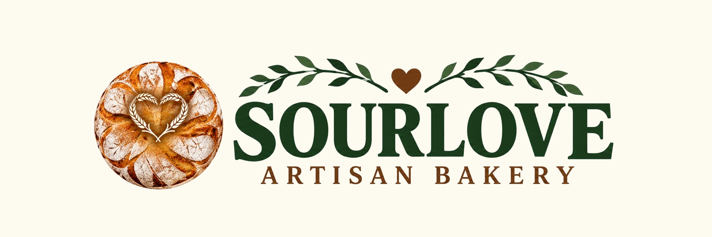

Classic Sourdough
Traditional loaf with crisp crust and open crumb.
£5.00

A taste of what we’re baking at SOURLOVE.
Traditional loaf with crisp crust and open crumb.
£5.00
Fragrant loaf enriched with olive oil and rosemary.
£6.00
Soft focaccia topped with Portuguese chorizo and olives.
£4.50
Rich chocolate muffins made with sourdough.
£2.50 (pack of 2)
Simple pre‑orders with collection at markets and the Bake Shed.
1. Browse the menu.
2. Submit an order request on the Order page.
3. Choose a collection point.
4. Wait for confirmation.
Find SOURLOVE at local markets and events.
Fresh sourdough, focaccia and sweet bakes.
Perfect for regular customers.
The passion behind SOURLOVE.
SOURLOVE is a small artisan bakery based in Waterlooville, Hampshire.
We specialise in sourdough bread and handmade baked goods, using traditional fermentation techniques.
Every bake is prepared with care, dedication and a passion for real bread.